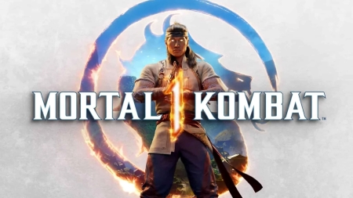
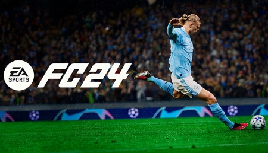
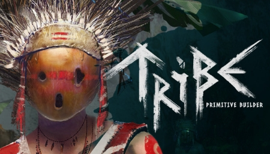

O modo de história que define o gênero de Mortal Kombat continua. Refletindo a visão de
perfeição do Deus do Fogo Liu Kang, o novo universo de Mortal Kombat 1 é familiar, mas totalmente
alterado. E, potencialmente, mais perigoso do que nunca. Descubra as forças destinadas a minar a
Nova Era de Liu Kang.Experimente uma simulação de ponta com visuais fotorrealistas incríveis que oferecem ray
tracing em tempo real na pista, novos sistemas de acúmulo de danos e terra e física extremamente
aprimorada, com assistências poderosas e uma melhoria de 48x na fidelidade dos pneus.

O EA SPORTS FC™ 24 traz o Jogo de Todo Mundo: a experiência mais realista de futebol com o
HyperMotionV, PlayStyles otimizada pela Opta, e uma Frostbite™ Engine melhorada.

Explore a misteriosa ilha dos exilados. Reúna recursos, crie, construa um assentamento.
Conheça os locais, crie sua própria tribo, automatize e gerencie. Caça, cuide do seu sono, comida e
água. Chillout no mundo da Tribo. Mas lembre-se, somente você pode salvá-lo da destruição.